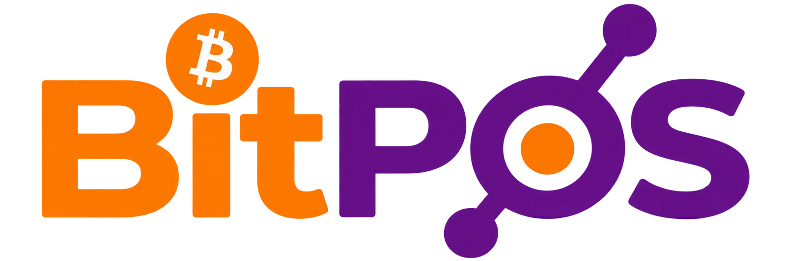
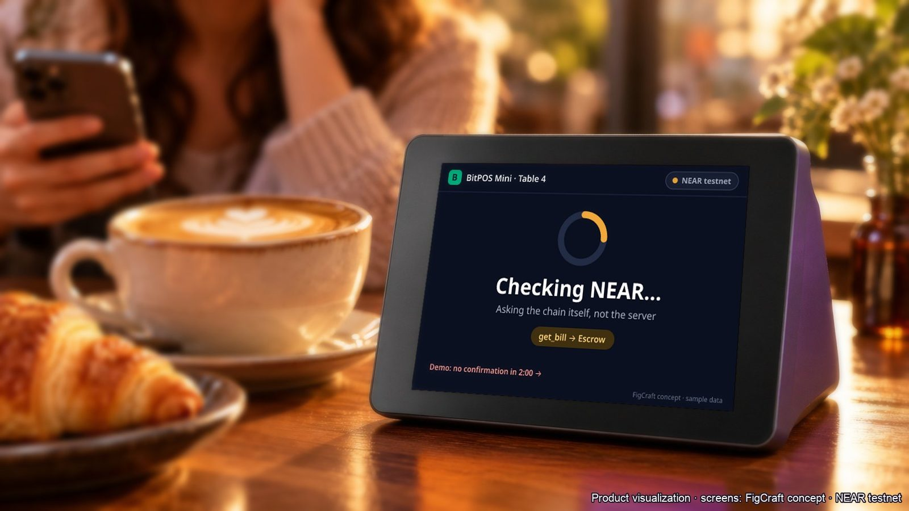
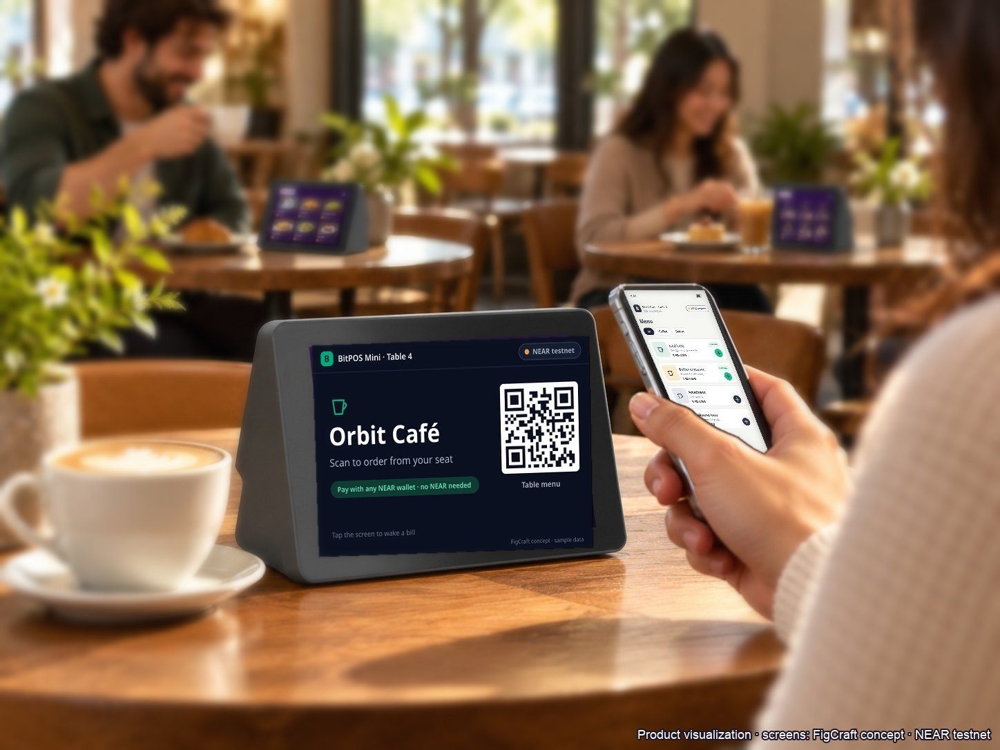

One mixed balance
Sales, tips, tax and supplier money all land in the same account, and someone has to untangle it later.

NEAR editionA café bill that is a NEAR contract: the guest pays once, and the owner, the barista on shift, the tax reserve and the supplier are paid in the same transaction.
NEAR testnet · test money only · no real money
Cafés pay tips, tax and suppliers by hand, days after the sale, from one mixed balance.
Sales, tips, tax and supplier money all land in the same account, and someone has to untangle it later.
The barista who made the drink sees their share days or weeks after the guest paid.
Tax sits in the same balance as everything else, so it is easy to spend before it is due.
The milk supplier waits on a manual transfer instead of being paid as the cups are sold.
Four steps, from the counter to every payee, in one NEAR transaction.
The price comes from the café's own server, not from the guest's phone.
A NEAR meta transaction: the café's relayer pays the gas, only for exactly this bill.
Owner, barista, tax reserve and supplier are paid together. All or none.
Anything that is not exactly the bill is returned to the sender by itself.
In witness mode the money waits in escrow until the BitPOS Mini at the table signs that it showed PAID.
Honest note: the testnet witness runs used the browser's simulated screen running the same protocol. The BitPOS Mini firmware boots on the device and passes its on-chip signature self-test.

A guest lets an AI agent pay at the café for a set time, with a spending cap and a per-bill limit.
pass_pay. It cannot move money anywhere else.Pass: 1 hour, cap 20, per bill 10. Agent key: function-call key limited to pass_pay.
What changes for the owner when the bill pays everyone.
The barista on shift gets their share of every bill, the moment it is paid.
An invoice takes its cut from each bill until it is paid off.
The tax share goes to its own reserve account in the same transaction.
A transaction link on every line, and a CSV export.
Suggested split changes that the owner approves or dismisses. sample mode in this build
BitPOS Mini sits on the table. Guests scan to pay, and in witness mode it signs that it showed PAID. Its device key is made on the device itself.

Screens captured from the running app on NEAR testnet. Select any screen to view it larger.
NEP-141 receiver, batched payouts, ed25519_verify.
Gasless for the guest; the café's relayer pays gas only for exactly this bill.
The cashier key cannot move money. The AI agent key is limited to pass_pay.
Readable accounts for the café, the tax reserve, staff and suppliers.
Used for the test token.
Dry-quote preview only. Nothing executed.
Powers Café CFO. Sample mode in this build.
NEAR testnet · test money only · no real money